Introduction: System Modeling
The first step in the control design process is to develop appropriate mathematical models of the system derived either from physical laws or experimental data. In this section, we introduce the state-space and transfer function representations of dynamic systems. We then review some basic approaches to modeling mechanical and electrical systems and show how to enter these models into MATLAB for further analysis.
Key MATLAB commands used in this tutorial are: ss , tf
Contents
Dynamic Systems
Dynamic systems are systems that change or evolve in time according to a fixed rule. For many physical systems, this rule can be stated as a set of first-order differential equations:
(1)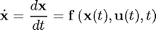
In the above equation, 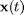 is the state vector, a set of variables representing the configuration of the system at time 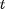. For instance in a simple mechanical mass-spring-damper system, the two state variables could be the position and velocity of the mass. 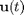 is the vector of control inputs at time , representing the externally applied "forces" on the system, and 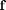 is a possibly nonlinear function giving the time derivative (rate of change) of the state vector, 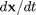 for a particular state, input, and time.
The state at any future time, 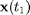, may be determined exactly given knowledge of the initial state, 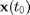, and the time history of the inputs, , between 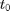 and 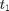 by integrating Eq.(1). Though the state variables themselves are not unique, there is a minimum number of state variables, 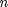, required in a given system for the above to hold true. is referred to as the system order and determines the dimensionality of the state-space. The system order usually corresponds to the number of independent energy storage elements in the system.
The relationship given in Eq.(1) is very general and can be used to describe a wide variety of different systems; unfortunately, it may be very difficult to analyze. There are two common simplifications which make the problem more tractable. First, if the function, , does not depend explicitly on time, i.e. 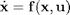, then the system is said to be time invariant. This is often a very reasonable assumption, since the underlying physical laws themselves do not typically depend on time. For time invariant systems, the parameters or coefficients of the function, , are constant. The control input, however, may still be time dependent, .
The second common assumption concerns the linearity of the system. In reality, nearly every physical system is nonlinear. In other words, is typically some complicated function of the state and inputs. These nonlinearities arise in many different ways, one of the most common in control systems being "saturation" in which an element of the system reaches a hard physical limit to its operation. Fortunately, over a sufficiently small operating range (think tangent line near a curve), the dynamics of most systems are approximately linear, that is 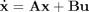.
Until the advent of digital computers (and to a large extent thereafter), it was only practical to analyze linear time invariant (LTI) systems. Consequently, most of the results of control theory are based on these assumptions. Fortunately, as we shall see, these results have proven to be remarkably effective and many significant engineering challenges have been solved using LTI techniques. In fact, the true power of feedback control systems are that they work (are robust) in the presence of the unavoidable modeling uncertainty.
State-Space Representation
For continuous linear time invariant (LTI) systems, the standard state-space representation is given below:
(2)
(3)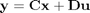
where 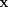 is the vector of state variables (nx1), 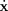 is the time derivative of state vector (nx1), 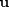 is the input or control vector (px1), 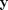 is the output vector (qx1), 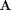 is the system matrix (nxn), 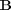 is the input matrix (nxp), 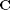 is the output matrix (qxn), 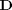 is the feedforward matrix (qxp).
The output equation, Eq.(3), is necessary because often there are state variables which are not directly observed or are otherwise not of interest. The output matrix, , is used to specify which state variables (or combinations thereof) are available for use by the controller. Also often there is no direct feedforward in which case is the zero matrix.
The state-space representation, also referred to as the time-domain representation, can easily handle multi-input/multi-output (MIMO) systems, systems with non-zero initial conditions, and nonlinear systems via Eq.(1). Consequently, the state-space representation is used extensively in "modern" control theory.
Transfer Function Representation
LTI systems have the extremely important property that if the input to the system is sinusoidal, then the output will also be sinusoidal at the same frequency but in general with different magnitude and phase. These magnitude and phase differences as a function of frequency are known as the frequency response of the system.
Using the Laplace transform, it is possible to convert a system's time-domain representation into a frequency-domain output/input representation, known as the transfer function. In so doing, it also transforms the governing differential equation into an algebraic equation which is often easier to analyze.
The Laplace transform of a time domain function, 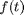, is defined below:
(4)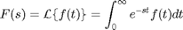
where the parameter 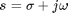 is a complex frequency variable. It is very rare in practice that you will have to directly evaluate a Laplace transform (though you should certainly know how). It is much more common to look up the transform of the function you are interested in in a table such as the one found here: Laplace Transform Table
The Laplace transform of the nth derivative of a function is particularly important:
(5)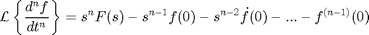
Frequency-domain methods are most often used for analyzing LTI single-input/single-output (SISO) systems, e.g. those governed by a constant coefficient differential equation as follows:
(6)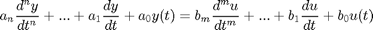
The Laplace transform of this equation is given below:
(7)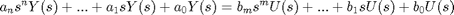
where 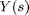 and 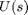 are the Laplace Transforms of 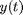 and 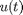 respectively. Note that when finding transfer functions, we always assume that the each of the initial conditions, 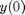, 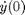, 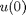, etc. is zero. The transfer function from input to output is therefore:
(8)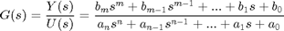
It is useful to factor the numerator and denominator of the transfer function into the so called zero-pole-gain form:
(9)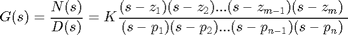
The zeros of the transfer function, 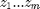, are the roots of the numerator polynomial, i.e. the values of s such that 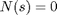. The poles of the transfer function,  , are the roots of the denominator polynomial, i.e. the values of s such that 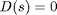. Both the zeros and poles may be complex valued (have both real and imaginary parts). The system Gain is 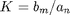.
, are the roots of the denominator polynomial, i.e. the values of s such that 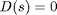. Both the zeros and poles may be complex valued (have both real and imaginary parts). The system Gain is 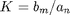.
Note that we can also determine the transfer function directly form the state-space representation as follows:
(10)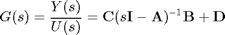
Mechanical Systems
Newton's laws of motion form the basis for analyzing mechanical systems. Newton’s second law, Eq. (11), states that the sum of the forces acting on a body equals its mass times acceleration. Newton's third law, for our purposes, states that if two bodies are connected, then they experience the same magnitude force acting in opposite directions.
(11)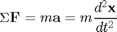
When applying this equation, it is best to construct a free body diagram (FBD) of the sysetm showing all applied forces.
Example: Mass-Spring-Damper System

The free body diagram for this system is shown below. The spring force is proportional to the displacement of the mass, 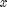, and the viscous damping force is proportional to the velocity of the mass, 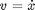. Both forces oppose the motion of the mass and are therefore shown in the negative -direction. Note also, that 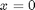 corresponds to the position of the mass when the spring is unstretched.

Now we proceed by summing the forces and applying Newton’s second law, Eq. (11), in each direction of the problem. In this case, there are no forces acting in the 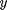-direction; however, in the -direction we have:
(12)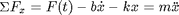
This equation, known as the governing equation, completely characterizes the dynamic state of the system. Later, we will see how to use this to calculate the response of the system to any external input, 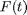, as well as analyze system properties such as stability and performance.
To determine the state-space representation of the mass-spring-damper system, we must reduce the second order governing equation to a set of two first order differential equations. To this end, we choose the position and velocity as our state variables.
(13)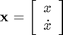
Note also that these state variables correspond to the potential energy in the spring and the kinetic energy of the mass respectively. Often when choosing state variables it is helpful to consider the independent energy storage elements in the system.
The state equation in this case is as follows:
(14)
If, for instance, we are interested in controlling the position of the mass, then the output equation is as follows:
(15)
Entering State-Space Models into MATLAB
Now we will show you how to enter the equations derived above into a m-file for MATLAB. Let's assign numerical values to each of the variables.
m mass 1.0 kg k spring constant 1.0 N/m b damping constant 0.2 Ns/m F input force 1.0 N
Create a new m-file and enter the following commands.
m = 1; k = 1; b = 0.2; F = 1; A = [0 1; -k/m -b/m]; B = [0 1/m]'; C = [1 0]; D = [0]; sys = ss(A,B,C,D)
sys =
a =
x1 x2
x1 0 1
x2 -1 -0.2
b =
u1
x1 0
x2 1
c =
x1 x2
y1 1 0
d =
u1
y1 0
Continuous-time state-space model.
The Laplace transform for this system assuming zero initial conditions is
(16)
and therefore the transfer function from force input to displacement output is
(17)
Entering Transfer Function Models into MATLAB
Now we will show how to enter the transfer function derived above into MATLAB. Enter the following commands into the m-file in which you defined the system parameters.
s = tf('s');
sys = 1/(m*s^2+b*s+k)
sys =
1
---------------
s^2 + 0.2 s + 1
Continuous-time transfer function.
Note that we have used the symbolic s variable here to define our transfer function model. We recommend using this method most of the time; however, in some circumstances, for instance in older versions of MATLAB or when interfacing with SIMULINK, you may need to define the transfer function model using the numerator and denominator polynomial coefficients directly. In these cases, use the following commands:
num = [1]; den = [m b k]; sys = tf(num,den)
sys =
1
---------------
s^2 + 0.2 s + 1
Continuous-time transfer function.
Electrical Systems
Like Newton’s laws in mechanical systems, Kirchoff’s circuit laws are the basic analytical tool in electrical systems. Kirchoff’s current law (KCL) states that the sum of the electrical currents entering and exiting a node in a circuit must be equal. Kirchoff’s voltage law (KVL) states that the sum of voltage differences around any closed loop in the circuit is zero. When applying KVL, the source voltages are typically taken as positive and the load voltages taken as negative.
Example: RLC Circuit
We will now consider a simple series combination of three passive electrical elements: a resistor, an inductor, and a capacitor, known as an RLC Circuit.

Since this circuit is a single loop, each node only has one input and output; therefore, application of KCL simply shows that the current is the same throughout the circuit at any given time, . Now applying KVL around the loop and using the sign conventions indicated in the diagram, we arrive at the following governing equation.
(18)
We note that that the governing equation for the RLC circuit has an analogous form to the mass-spring-damper mechanical system. In particular, they are both second order systems where the charge (integral of current) corresponds to displacement, the inductance to mass, the resistance to viscous damping, and the inverse capacitance to the spring stiffness. These analogies and others like them turn out to be quite useful conceptually in understanding the behavior of dynamical systems.
The state-space representation is found by choosing the charge and current as the state variables.
(19)
where,
(20)
The state equation is therefore:
(21)
We choose the current as ouput as follows:
(22)
The transfer function representation may be found by taking the Laplace transform as we did for the mass-spring-damper or from the state-space equation as follows:
(23)
(24)
The RLC state-space and transfer fcuntion models can be entered into MATLAB using the same procedure as discussed for the mass-spring-damper system above.
System Identification
In this section, we have seen how to model systems using basic physical principles; however, often this is not possible either because the parameters of the system are uncertain, or the underlying processes are simply not known. In these cases, we must rely on experimental measurements and statistical techniques to develop a system model, a process known as system identification.
System identification may be performed using either time-domain or frequency-domain data, see the Introduction: System Identification page.
Also refer to MATLAB’s System Identification Toolbox for more information on this subject.
System Conversions
Most operations in MATLAB can be performed on either the transfer function, the state-space model, or the zero-pole-gain form. Furthermore, it is simple to transfer between these if the other form of representation is required. If you need to learn how to convert from one representation to the other, see the Introduction: System Conversions page.